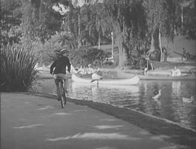
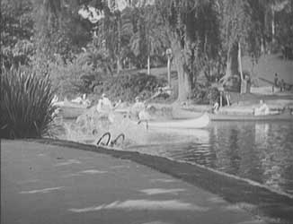
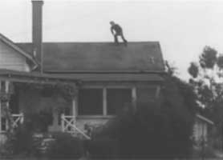
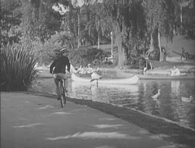
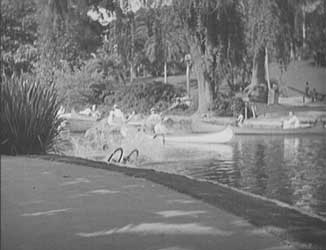
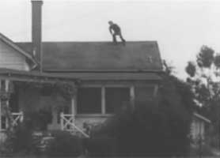

mechanics
as art
mechanics
as art  radical
art homepage
radical
art homepage
to fall
|
  |
|
 |
|
mechanics as art
to fall
 
Stan Laurel & Oliver Hardy: Men O'War, 1929

Bas Jan Ader: Fall I (Los Angeles), 1970
Bas Jan Ader: Fall II (Amsterdam), 1970